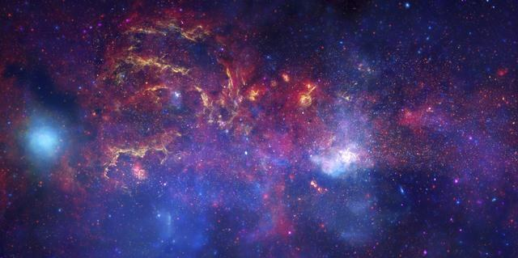
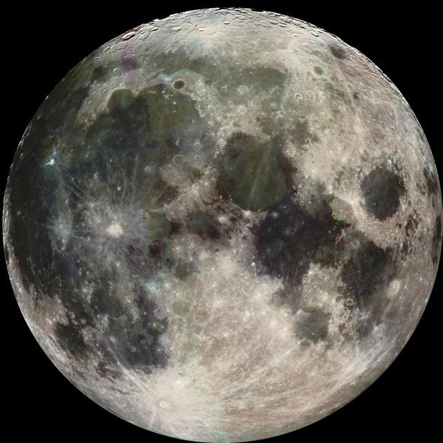
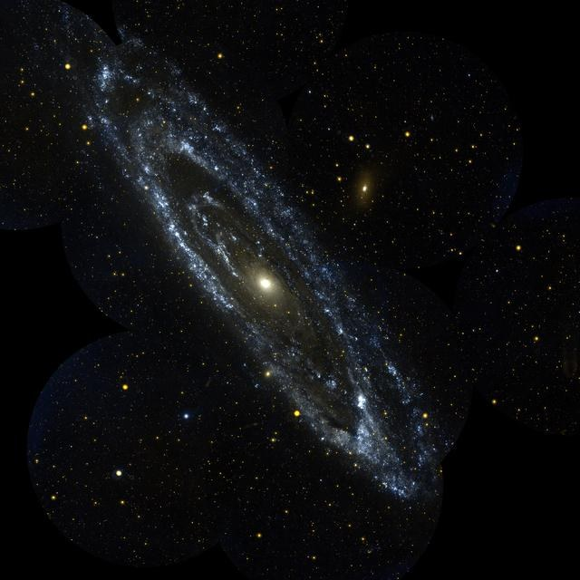

Three extraordinary destinations. One beautiful place to start.
Connecting to the planet catalogue…
03 / SOL SYSTEM⊕
TERRESTRIAL PLANET
Earth
Our beautiful blue home. Unlike any other.
MEAN RADIUS
6,371 km
ONE YEAR
365.25 Earth days
Get to know Earth +
Earth is the only world where life has been confirmed. Liquid oceans, a protective atmosphere, and a magnetic field help make our home a remarkable place.
Mars is a cold desert world with a thin atmosphere. Iron minerals give it a rusty red color. Ancient riverbeds and water-altered rocks offer clues to a wetter past.
Planet values are approximate · Imagery: NASA and partners
02 / THE BIGGER PICTURE
A star. Eight planets. One remarkable system.
Our solar system is a family of worlds held together by the Sun’s gravity. From tiny Mercury to distant Neptune, every planet follows its own path around our star.
The four inner planets are rocky. Farther out, Jupiter and Saturn are gas giants, while Uranus and Neptune are ice giants.
Real observations. Extraordinary places. A glimpse beyond the everyday.

THE MILKY WAY
The heart of our galaxy
A view beyond visible light.

THE MOON
Our closest companion
A familiar face. A remarkable world.

ANDROMEDA
Beyond our neighborhood
Another island of stars.
Behind the images: science & credits +
Space images can reveal light our eyes cannot see. The Milky Way image combines Hubble, Spitzer, and Chandra observations; Andromeda is shown in ultraviolet light mapped to visible colors. Earth and Mars are composite views.
Image links open the original NASA records in a new tab. This independent student project is not affiliated with or endorsed by NASA.
04 / MISSION CONTROL
Your discovery trail.
Three worlds. Three small missions. Turn curiosity into something you remember.
EXPLORATION PROGRESS
Loading progress…
Your next mission is on its way.
Loading missions…
Progress is saved for this browser. Complete each objective, then mark it done. This is your own learning checklist; completion is self-reported.
05 / YOUR NEXT DISCOVERY
Keep an exploration notebook.
Save a question. Record a discovery. Come back to it on your next visit.
Your notes are saved for this browser. Choose a planet and write something you want to explore or have learned.
Your discoveries
Loading your notebook…
✳
05 / OUR MISSION
Space is for the curious.
Space Explorer began with a simple idea: make our universe a little easier to understand, and a lot more exciting to explore. From our blue home to the rings of Saturn, every discovery is a reason to keep looking up.